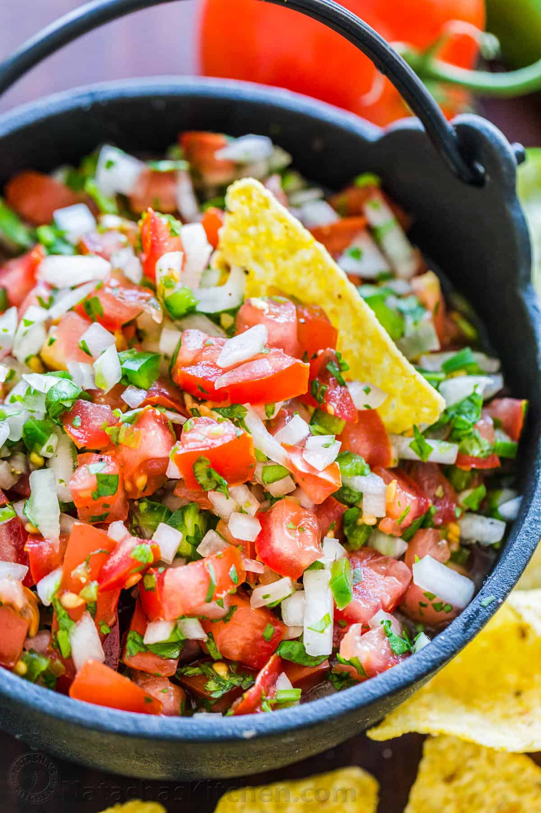

Pico de Gallo

Description:
Pico de gallo is a tasty an easy and tasty dip/topping to make.
You only need a few ingredients with no cooking involved!
A note on ingredients: you can use any type of tomato or onion you want and any portion of ingredients.
I just prefer the listed proportions and types of ingredients.
Ingredients:
- 2 Roma Tomatoes
- 2 Red Onions
- 1 head of cilantro
- Salt
- 2 Jalapenos
- 1 Lime
Steps:
- Chop the tomatoes into small cubes then place into the mixing bowl
- Peel then chop the onions a bit finer than the tomatoes and place in mixing bowl
- Chop the head of cilantro as finely as you can (small buschels are fine) and place in mixing bowl
- Chop the jalapenos finely and place in mixing bowl
- Squeeze entire lime into bowl of ingredients
- Pour a decent amount of salt into the bowl
- Mix ingredients in bowl together
- Place bowl in fridge and let sit for at least 30 minutes